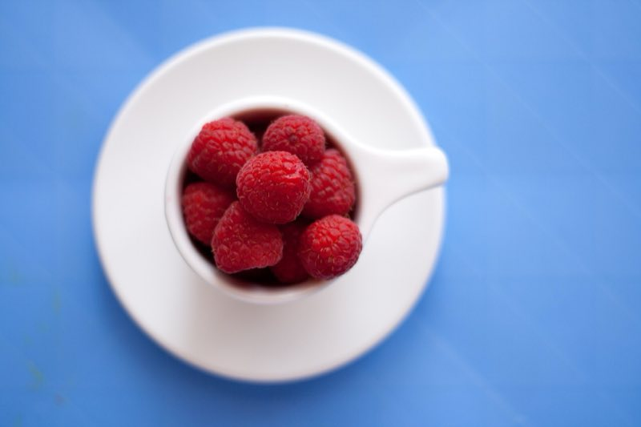

Kitchen rules
Good cooks are safe cooks. Read these with an adult before your first recipe.
Seven rules for little chefs
Wash your hands. Use soap and scrub for 20 seconds. That is about as long as singing "Happy Birthday" twice.
Tie back long hair and roll up your sleeves, so nothing dips into the food.
Ask an adult first before you use the oven, the hob (the hot top of the cooker), a knife, the grater, the blender or the kettle.
Turn pan handles in, away from the front of the cooker, so nobody knocks a pan over.
Hot things need oven gloves, and an adult right next to you.
Wipe up spills straight away, so nobody slips.
Wash fruit and vegetables under running water before you eat them.
Spoons and cups
Our recipes use these sizes. Fill a spoon, then make it flat across the top, not a heap.
| Measure | Holds | Water weighs |
|---|---|---|
| 1 teaspoon tsp | 5 ml | 5 g |
| 1 tablespoon tbsp | 15 ml | 15 g |
| 1 cup | 250 ml | 250 g |
| 4 cups | 1 litre | 1 kg |
3 teaspoons fill 1 tablespoon. In Australia a tablespoon holds 20 ml, but this cookbook always uses 15 ml. In the USA a cup is a little smaller, about 240 ml.

Same cup, different weight
One millilitre of water weighs one gram. Other foods are heavier or lighter than water. That is why bakers like to use scales.
Each bar is one full cup (250 ml).